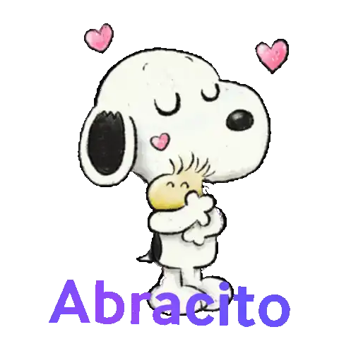
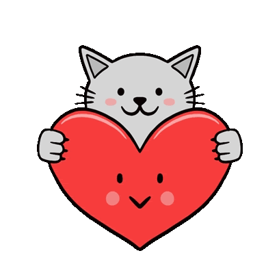
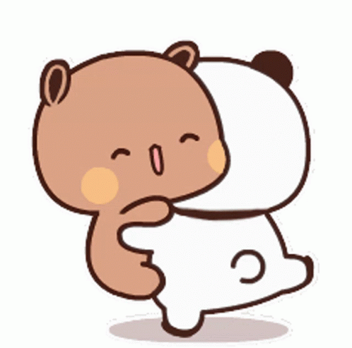
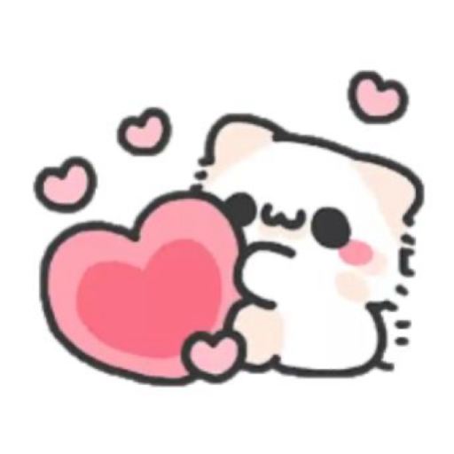
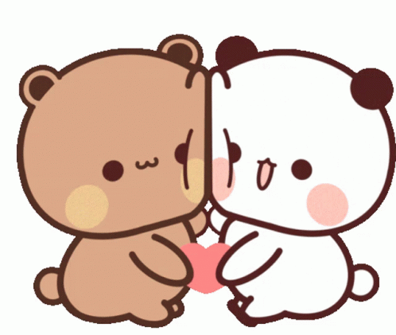

Esos abrazos largos que, la verdad, me daban muchísima paz.
Una carta tranquila
Melody
Hola, Melody. Hice esto porque, la verdad, decirte estas cosas en persona me costaría bastante. Seguro me pondría nervioso, me costaría mirarte a los ojos y se me irían varias palabras.

Primero
Soy medio torpe para estas cosas.
Creo que ya te habrás dado cuenta de que soy una persona un poco nerviosa. Sobre todo cuando se trata de hablar de amor, cariño o de cosas que de verdad me importan.
Por eso preferí escribirlo así: para explicarme mejor, con calma, y decirte las cosas claras, como me salen del corazón.

Lo que siento
Me alegra que ya estemos bien.
La verdad, esa distancia que sentía entre los dos me tenía pensando bastante. Por eso me alegra que hayamos podido arreglarnos, porque yo no quería que algo bonito entre nosotros terminara sintiéndose raro.
Me sigues gustando, no voy a fingir que no. Solo quiero llevarlo con calma, sin volverlo pesado, y cuidar esa confianza bonita que tenemos. Me gusta estar bien contigo.

Lo bonito
Hay cosas que sí me encantaban.
Y no te voy a mentir: cuando te fui conociendo, una parte de mí decía: guau, esta chica tiene todo lo que yo siempre he buscado. Para mí era como ver a un ser místico, algo que pensé que nunca existiría, pero sí existía. Me gustaba tu forma de ser, tus gustos y esa manera tuya de hacer que una conversación no se sintiera vacía.
Estar viendo Rick y Morty, una película o cualquier cosa contigo.
Agarrarte la mano, aunque no sé si a ti también te gustaba.
Hablar de anime, comedia, ciencia ficción e ideas raras.

Lo que quiero cuidar
Si esto se queda en amistad, quiero hacerlo bien.
A mí me gustaría que pudiéramos seguir siendo amigos con confianza: darnos abrazos, ver algo juntos, reírnos y estar bien, como dos personas que se tienen cariño.
Y si algo no te nace, está bien. Prefiero que lo nuestro sea natural, sin forzar momentos y sin hacer las cosas raras.

Un gesto simbólico
Voy a recuperar mi pedacito de corazón.
No lo hago para borrar lo que sentí, porque lo que sentí fue real. Lo hago para guardarlo bonito y poder quererte de una forma más tranquila, como amiga.
Toca los 8 pedacitos que flotan.
0 / 8
Pedacito recuperado
Gracias por leerme, Melody.
Me quedo con lo bonito, voy a soltar lo que tenga que soltar y voy a cuidar nuestra amistad con respeto. Me importas, y quiero que lo que siga entre nosotros se sienta tranquilo y sincero.